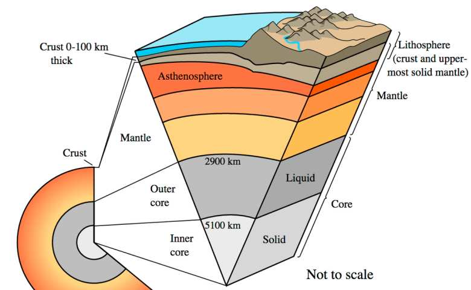
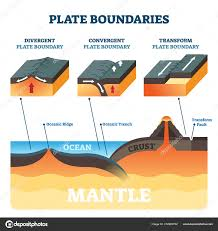
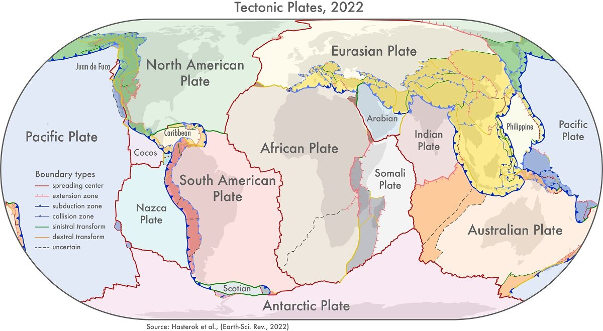
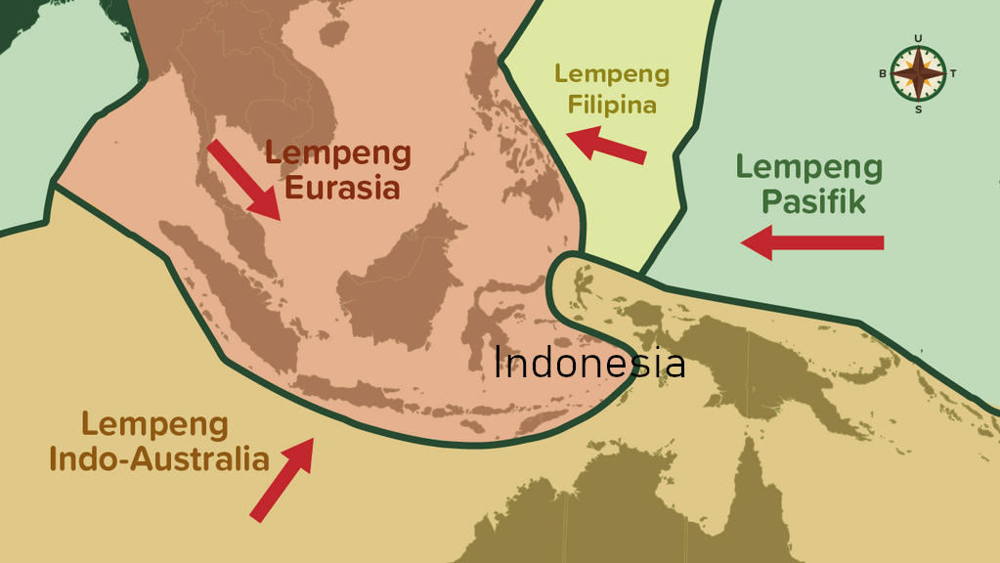

Struktur Bumi & Lempeng Tektonik
Presentasi Interaktif untuk Pembimbingan Olimpiade Sains Kebumian
Struktur Internal Bumi
Struktur Bumi terdiri atas empat lapisan utama:
- Kerak (Crust): Lapisan terluar yang tipis dan padat, terdiri dari kerak samudra (basa) dan kerak benua (asam).
- Selubung (Mantle): Tebal, terdiri dari batuan silikat padat yang plastis di bagian astenosfer.
- Inti Luar (Outer Core): Fasa cair, dominan besi dan nikel, bertanggung jawab atas medan magnet bumi.
- Inti Dalam (Inner Core): Padat, suhu mencapai 5000–6000 °C, tekanan sangat tinggi.

Teori Tektonik Lempeng
Teori ini menjelaskan dinamika litosfer yang terbagi menjadi lempeng-lempeng tektonik besar dan kecil yang mengapung di atas astenosfer. Pergerakan lempeng dikendalikan oleh konveksi mantel dan gaya slab pull & ridge push.
- Konvergen: Tumbukan antar lempeng → zona subduksi → aktivitas seismik dan vulkanik.
- Divergen: Pemisahan lempeng → pembentukan mid-ocean ridge.
- Transform: Gesekan horisontal antar lempeng → sesar transform.
Pergerakan Tektonik Lempeng

Peta Lempeng Tektonik Dunia

Teori Tektonik Lempeng Indonesia
Wilayah Indonesia berada pada pertemuan tiga lempeng utama: Lempeng Indo-Australia, Eurasia, dan Pasifik. Hal ini menyebabkan wilayah Indonesia sangat aktif secara tektonik.
Peta Lempeng Tektonik Indonesia

Video Edukasi: Lempeng Tektonik
Simulasi interaktif dari pergerakan lempeng dan dampaknya terhadap geologi regional.
Implikasi Geodinamika
Pergerakan lempeng memengaruhi formasi geologi besar seperti:
- Busur vulkanik (arc volcanism)
- Cekungan sedimen (sedimentary basins)
- Rantai pegunungan (orogenesa)
- Gempa bumi dalam (deep focus earthquakes)
Diskusi & Analisis
Bandingkan zona subduksi di Indonesia dengan zona transform di San Andreas Fault. Apa implikasi masing-masing terhadap risiko geologi dan mitigasinya?
Terima Kasih
Disusun untuk Pembimbingan Olimpiade Sains Kebumian
SMAN 8 Kota Tangerang Selatan